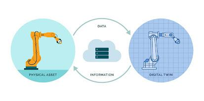

What are Digital Twins?
Digital twins are virtual representations of physical objects, systems, or processes that are used to simulate and analyze real-world scenarios. They are becoming increasingly popular in various industries, including manufacturing, healthcare, and urban planning, due to their ability to provide valuable insights and optimize processes in real-time.
Applications of Digital Twins
In manufacturing, digital twins can be used to simulate the performance and behavior of products, such as cars and machines, before they are built. This allows manufacturers to identify and fix problems before the physical product is produced, which can save time and money, and improve the overall quality of the product.
In healthcare, digital twins can be used to create virtual representations of patients, which can help doctors and healthcare professionals to understand the patient's medical history, predict potential health issues, and develop personalized treatment plans. This can lead to more accurate diagnoses, better patient outcomes, and reduced healthcare costs.
In urban planning, digital twins can be used to simulate and analyze the impact of new developments, such as buildings and infrastructure projects, on the surrounding environment. This allows urban planners to identify potential problems, such as traffic congestion and environmental impacts, and make adjustments before the project is completed.
Figure 1
Problems with the Use of Digital Twins
Despite all the benefits, there are also challenges associated with digital twins, such as privacy and security. Digital twins contain sensitive data, such as personal information, and there is a risk that this data could be compromised if the digital twin is hacked or accessed without authorization. Additionally, the accuracy of digital twins is dependent on the quality of the data that is used to create them, and there is a risk that errors in the data could lead to incorrect conclusions.
References
Digital twins are a valuable tool for organizations in various industries, as they provide insights and optimize processes in real-time. They have the potential to revolutionize the way we approach problem-solving and decision-making, but it is important to address the challenges associated with the technology, such as privacy and security, to ensure its continued growth and success. As the technology continues to evolve and mature, we can expect to see digital twins becoming increasingly common in a variety of applications.